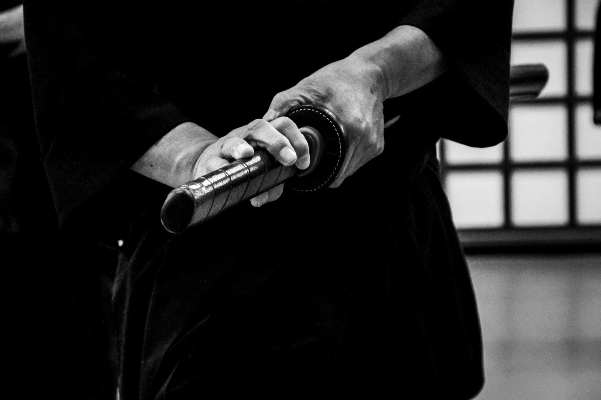

Muso Jikiden Eishin Ryu Iaijutsu Komei Juku es una koryu (escuela antigua) fundada entre la Era Eiroku (1558) y la Era Tensho (1592) por Hayashizaki Jinsuke no Shigenobu.
Reconocida por la Nihon Kobudo Kyokai bajo el liderazgo del 21° sucesor legítimo, Sekiguchi Takaaki Komei Sensei.
Leer másPrácticas intensivas con el 21° Soke de Muso Jikiden Eishin Ryu.
Demostraciones del arte del Iaijutsu en eventos culturales japoneses.
Práctica de corte con katana real sobre tatami omote.
Komei Juku Argentina cuenta con dojos en Buenos Aires, Gran Buenos Aires y Córdoba.
Sensei Dario Vega
Sensei Javier Ojeda
Sensei Mitsuko Sekiguchi
Sensei Fernando Marti
Sensei Javier Alberdi
Sensei Jorge Ruiz
Sensei Sergio Sanchez
Sensei Horacio Machado